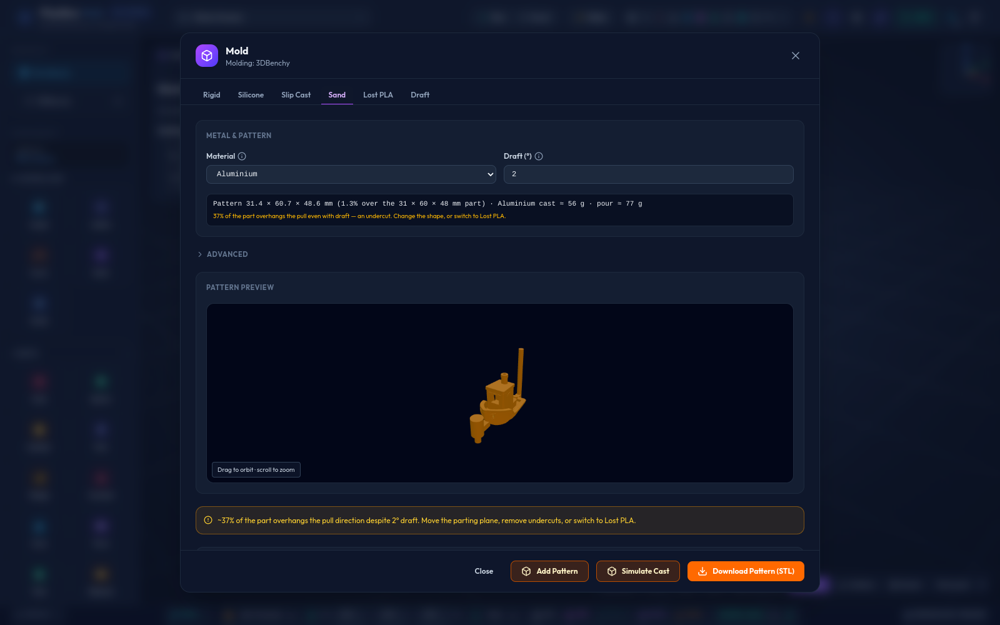
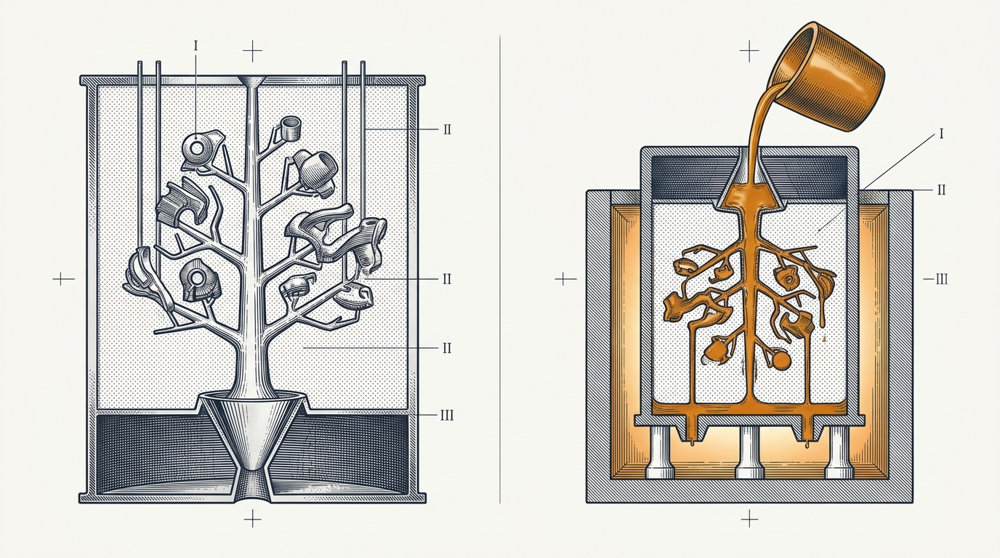
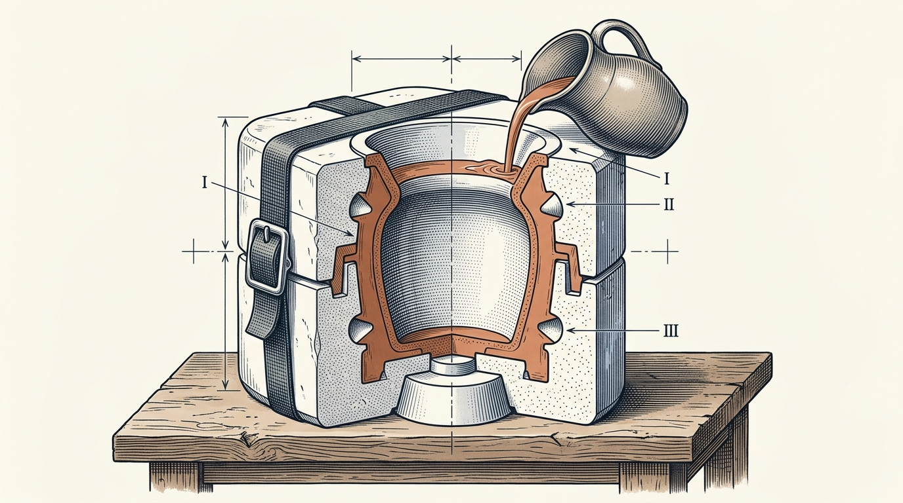
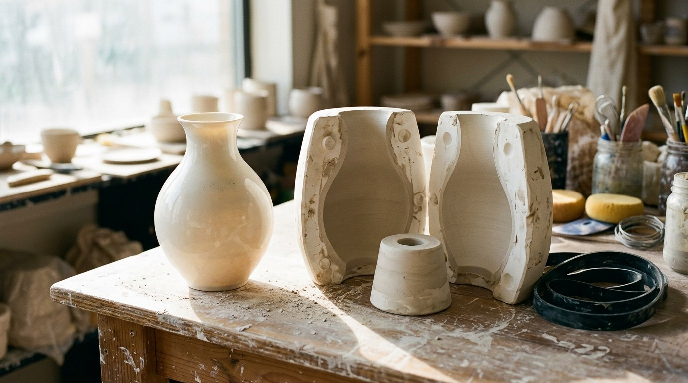
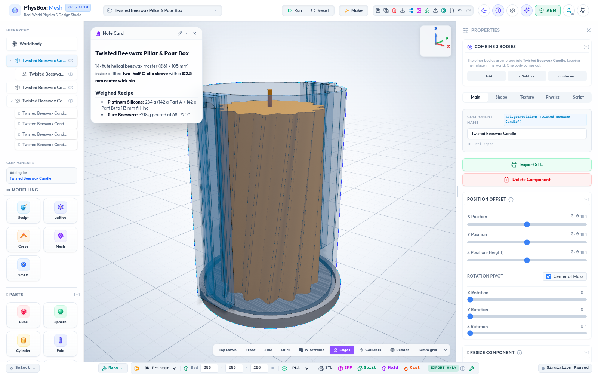

Practical shop floor wisdom, deep technical walkthroughs, and zero-nonsense fabrication guides for PhysBox Etch, Volt, and Mesh.
PhysBox Etch Studio 12 Min Read Level: Beginner
A Beginner's Guide To CNC & Laser Cutting with PhysBox Etch
How to transform digital vector designs into physical wood, acrylic, and brass parts with safety, kerf compensation, and precision.
1. The Subtractive Mindset & Why CNCs Don't Forgive Lies
Welcome to the satisfying, noisy, and occasionally terrifying realm of subtractive manufacturing. If you come from the gentle world of 3D printing, you are accustomed to an additive hotend that patiently squirts molten PLA onto a glass bed. If a 3D printer makes a mistake, it leaves a harmless blob of plastic string.
A CNC router or high-power laser cutter, by contrast, operates with uncompromising physical force. It spins a hardened tungsten carbide cutter at 18,000 RPM or focuses a 40-watt CO₂ laser beam down to a 0.1mm kerf spot. It does not care if that material is 18mm Russian Birch Plywood, anodized aluminum, or your favorite aluminum workpiece hold-down clamp. If your code tells the tool to plunge 20mm deep into solid stock at 5,000 mm/min, it will cheerfully try to do so until either the stepper motor stalls, the bit snaps, or your circuit breaker trips.
Golden Rule #1 of Subtractive Milling
In 3D printing, mistakes cost 4 cents of filament. In CNC milling, mistakes cost a $35 end mill, a ruined piece of hardwood, and 45 minutes of picking wooden splinters out of your hair.
PhysBox Etch was designed specifically to bridge vector artwork with real CNC machine control without requiring a degree in mechanical engineering. It gives you a bed-accurate 2D design workspace, automatic derived speeds and feeds, real-time safety warnings, and live GRBL machine control over WebSerial.
Before touching a cutter, you must understand where your machine thinks it is in 3D space. CNC machines operate on two distinct coordinate systems:
Machine Coordinates (MPos): Set when you home your machine ($H) against physical limit switches. Machine (0,0,0) is usually the back-right corner with the spindle pulled all the way up.
Work Coordinates (WPos / G54): The temporary local coordinate frame tied to your physical wooden stock. The bottom-left surface corner of your plywood is Work Zero (0,0,0).
Setting Up Your Bed Bounds in Etch
At the bottom bar of PhysBox Etch, set your exact physical stock size (e.g. 300mm x 200mm). The canvas updates immediately, displaying red and blue origin marker arrows at (0,0). Always align your physical stock on the CNC bed so the front-left corner matches the (0,0) origin on the Etch screen.
Watch Out for Clamps
Leave a 15mm margin around your vector artwork. Never place cuts right along the boundary edge unless your workpiece is held down by double-sided tape or vacuum rather than mechanical corner toe-clamps.
3. Tooling & Derived Feeds and Speeds
Picking the right cutting bit (end mill) and setting the correct spindle RPM / feed speed determines whether your cut sounds like a gentle hum or a screeching air-raid siren.
1
Upcut Spiral End Mill
Pulls wooden chips upward out of deep slots. Excellent for plywood pockets, but can leave minor fuzz on the top veneer.
2
Downcut Spiral End Mill
Pushes wood chips downward. Leaves a pristine, razor-sharp top surface on veneered hardwoods and plywood.
3
Compression Spiral
Combines upcut and downcut flutes for clean edges on both top and bottom faces of laminated sheets.
PhysBox Etch Safety Engine in Action
Etch calculates chip load automatically based on cutter diameter and material presets (Plywood, MDF, Acrylic, Hardwood). If you select 18,000 RPM in Plywood, Etch will warn you: "Spindle turned down to 15,625 RPM so feed stays within 2500 mm/min at the right chip thickness."
Never cut through 12mm plywood in a single heroic pass! Doing so creates massive tool deflection and will likely snap your carbide end mill. Instead, use multi-pass stepdowns:
Stepdown Depth: Cut in layers of 1.5mm to 3.0mm per pass depending on bit diameter (rule of thumb: maximum pass depth = 50% to 100% of bit diameter).
Holding Tabs: When cutting out a closed perimeter part, leave 2 to 4 small tabs (e.g. 4mm wide x 1.5mm thick) so the finished part stays anchored to the waste stock until the job finishes.
5. Touch-Plate Z Probing & 3×3 Bed Heightmaps
Accurate Z zeroing is the difference between a pristine cut and a gouged spoilboard. PhysBox Etch includes direct WebSerial touch-plate probing routines:
Attach the ground alligator clip to your metal CNC collet/cutter and place the aluminum touch plate flat on top of your material.
Open the Run / Machine Control Panel in Etch, enter touch plate thickness (e.g. 13.00 mm), and click Probe Z Zero.
The spindle slowly descends until electrical continuity is triggered, immediately zeroing your Z work coordinate with sub-millimeter precision.
PhysBox Etch Toolpath 3D Preview: Visualizing rapid moves, multi-pass stepdowns, and holding tabs.
6. 3D Toolpath Preview & Live WebSerial Streaming
PhysBox Etch streams G-code directly over USB WebSerial (supported in Chrome, Edge, and Opera). Connect your laptop to your GRBL 1.1, FluidNC, or grblHAL controller board.
PhysBox Etch WebSerial Streamer: Live coordinates, job boundary framing, feed override sliders, and emergency stop.
7. The Post-Mortem Guide: What Went Wrong?
Every CNC machinist and laser crafter makes mistakes. Here is how to diagnose the top shop floor issues:
Spindle Stalls / Loud Screech
Cause: Pass depth is too deep or feed rate is too fast. Fix: Back the feed off with Live Trim — it acts on the motion already buffered, so you do not lose the job. If it is still screeching, E-STOP, halve the stepdown in the Etch layer panel and re-run.
Charred / Blackened Wood
Cause: Spindle RPM is too high relative to feed speed (friction burn). Fix: Nudge feed up or spindle down with Live Trim mid-job until the burning stops, then save that pair into the layer for next time.
Rounded Inside Corners
Cause: A round 3.175mm end mill cannot cut sharp 90° inside corners on mating box tabs. Fix: Use Dogbone or T-bone corner reliefs in your vector design.
Congratulations!
You now possess the foundational knowledge to turn raw lumber into precision carved parts with PhysBox Etch. Remember: zero your Z properly, use holding tabs, wear eye protection, and enjoy the magical craft of making!
PhysBox Volt Studio Browser EDA & PCB CAM 18 Min Read Level: Intermediate
Bode Sweeps, 2-Layer PCB Milling & Realtime ESP32 HIL
How to design mixed-signal schematics, sweep small-signal Bode plots, link live 3D MuJoCo motors, probe copper-clad FR4 for 2-layer PCB milling, and stream real silicon over WebSerial.
1. Hardware-In-The-Loop (HIL) Silicon Meets SPICE
Traditional circuit simulators run purely in software isolation. Testing how physical ESP32 or CYD firmware responds to inductive motor kickback, active filters, or mechanical stall loads usually forces you to choose between breadboarding blind or writing synthetic mocks.
PhysBox Volt bridges both worlds. Its synchronous XSPICE/Ngspice WebAssembly engine streams bi-directionally in realtime over WebSerial with physical microcontrollers — exchanging ADC samples, DAC rail levels, and GPIO transitions without leaving the schematic canvas.
Coupled Mixed-Signal Bench: Physical MCU I/O, small-signal Bode frequency response, 2-layer isolation-milled FR4 copper, and electromechanical motor loads operating in one loop.
2. Quiescent DC Voltage Chips, Bode Sweeps & Power Ratings
Before committing a schematic to copper, Volt gives you three complementary inspection modes along the bottom status bar:
Quiescent DC Operating Point (DC): Stamps live quiescent voltage chips onto every wire net so biased op-amp rails, voltage dividers, and transistor base-emitter drops are readable at a glance.
Small-Signal AC Bode Sweeps (Bode): Sweeps log frequency across decades to plot magnitude (dB) and phase (°), automatically tagging the exact −3 dB cutoff frequency and supporting multi-value component parameter stepping (Step).
Live ERC & Component Rating Advisories: Flags shorted voltage rails, floating CMOS inputs, reverse-biased LEDs, and resistors exceeding their quarter-watt thermal envelope while the simulation runs.
PhysBox Volt Analysis View: Sallen-Key second-order active low-pass filter showing live DC net chips, dual-channel transient scope, and swept AC Bode curve (−3 dB at 1.12 kHz).
3. Single & 2-Layer Conductive PCB Milling, Stencils & Gerbers
Click Make in Volt's header to turn your schematic into a physical board on a desktop CNC mill (or export standard RS-274X Gerbers for a board house):
1
Copper Flood & DRC Routing
Auto-place footprints or drag/rotate (R) parts interactively. Volt routes top (F.Cu) and bottom (B.Cu) traces with generous pad clearance rings and optional copper flood so V-bits spend minutes, not hours, clearing copper.
2
4×4 Conductive FR4 Auto-Level
Copper-clad fiberglass always bows by 0.05–0.20 mm, which ruins shallow V-bit isolation passes. Clip probe leads to the V-bit and blank to sample a 16-point heightmap over WebSerial and warp Z toolpaths automatically.
3
Flip Pins & Etch Paste Stencils
For 2-layer boards, Volt drills 0.8 mm symmetric alignment pin holes into the spoilboard so the flipped board registers to sub-tenth accuracy — and sends SMD solder-paste apertures straight to PhysBox Etch for Mylar laser cutting.
2-Layer PCB Milling & CAM Engine: Interactive footprint placement, spoilboard registration pin depth, copper flood clearances, and one-click handoffs to Mesh (3D enclosure CAD) or Etch (paste stencil).
4. Live Mesh Electromechanical Co-Simulation & WebAudio I/O
Circuits rarely stop at a load resistor. Click Link Mesh in Volt's status bar to bind H-bridges, step drivers, NEMA 17 steppers, DC gearmotors, and Thiele-Small speaker drivers directly to a running 3D MuJoCo scene — Volt integrates coil currents and back-EMF while Mesh solves mechanical inertia, gear stall loads, and 3D enclosure acoustics.
For pure analog audio work (guitar pedals, synth VCFs, active crossovers), drop Microphone and Speaker nodes onto the canvas to stream live WebAudio straight through your SPICE components as you turn potentiometer sliders.
Pro Tip: Natural-Language Agent Workflows
With physbox-mcp connected, you don't need to memorize SPICE directives or tool names — just ask your AI agent to tune a filter corner, verify resistor power dissipation, and lay out a two-layer board.
PhysBox Mesh Studio 20 Min Read Level: Beginner to Advanced
Lattice & Sculpt CAD, Hydrostatics, 3D Vibro-Acoustics & Fabrication
Model hard-surface cages, clay sculpts, and OpenSCAD assemblies; simulate concave collisions, Archimedes buoyancy, internal hex-nut ballast, and zero-sample 3D instrument acoustics; then build the real part.
Different physical parts ask for different modelling tools, so PhysBox Mesh puts all three in the same scene tree:
Lattice Cage Modelling: Snap vertices on a clean decade grid (0.1–100 mm) for brackets, enclosures, and turned lathe revolves; press E on any edge loop for live parametric fillets/chamfers, or toggle Catmull–Clark subdivision.
Clay Sculpting & Silhouette Scissors: Brush organic forms from spheres, heads, or imported STLs and slice clean planar cuts straight across the viewport with the Scissors tool.
Parametric WASM OpenSCAD & Surface Generators: Write exact CSG scripts with inline Customizer sliders, and press T on any face to flood procedural architectural textures (Fluted, Kumiko, Guilloché, Lotus Mandala, Parquet, or curved Google Font lettering) onto printable geometry without slowing down physics.
2. Concave Collisions, Container Water & Hex-Nut Ballast
Every hollow body in Mesh undergoes automatic background V-HACD concave decomposition so bowls hold marbles, funnels guide parts, and open skiffs displace water until water spills over their gunwales.
Set waterFill on any open tank to enable 3D Archimedes hydrostatics (integrating submerged surface pressure and righting moments every MuJoCo step). If a top-heavy sculpture tips over on a shelf or capsizes in water, open the Balance card in the Inspector (Stand, Spin, or Float) — Mesh hollows internal cavities sized for standard M4–M16 steel hex nuts so you can pause your 3D print, drop in hardware-store ballast, and hit the exact target center of gravity.
3D Archimedes Hydrostatics & Auto-Ballast: An unballasted buoy capsizes on the left while six internal M16 steel hex nuts keep the center spar buoy upright beside a floating #3DBenchy.
3. Zero-Sample 3D Vibro-Acoustics & Luthier Soundboards
Every collision, plucked string, struck marimba bar, and blown bore in Mesh is synthesized live in a WebAudio Worklet from your part's actual 3D mesh and material constants (Young's modulus, density, loss tangent) — with zero pre-recorded audio samples.
Hollow wooden bodies couple Kirchhoff–Love bending-plate modes to a 3D FDTD air-chamber Helmholtz solver: widen a soundhole or thin a Sitka spruce top by 0.5 mm and hear the body resonance shift immediately before milling the real hardwood instrument.
In MeshCoupled String + Soundbox Solver: Five 80/20 bronze strings over a 2.5 L hollowed spruce cavity (∅52 mm soundhole, fH ≈ 122 Hz). Built in ShopPhysical CNC-Milled Instrument: Sitka spruce soundboard & walnut frame machined from the simulated dimensions, beside a printed flexure jig.
Toggle DFM in the viewport bar to paint steep overhangs and thin walls directly on the model. When ready to build, export assembly-aligned multi-material 3MF plates, split oversized prints with alignment dowels, break frames into CNC-mortised Timber cut-lists, lay bonded Brickwork courses, or unfold finger-jointed sheets straight into Etch. Every fabrication dialog includes Add Simulation so you can drop the machined, laser-cut, or cast result back into MuJoCo to verify fit and strength before cutting real stock.
PhysBox Mesh · Foundry 18 Min Read Level: Beginner to Intermediate
Backyard Sand Casting from 3D-Printed Patterns in PhysBox Mesh
Turn any 3D model into a drafted, shrinkage-compensated foundry pattern for Petrobond or green sand — complete with cope-and-drag anatomy, undercut checks, sprue/riser sizing, and exact pour weights.
1. Anatomy of a Two-Part Sand Mold (Cope, Drag, Sprue & Riser)
In green-sand or oil-bonded (Petrobond) foundry work, your 3D print is not burned away — it is a reusable positive pattern. You pack sand firmly around it inside a two-half alignment box (the drag on the bottom and the cope on top), separate the halves along the parting plane, and lift the plastic pattern cleanly out to leave a negative cavity ready for molten metal.
Cope & Drag Sand-Mold Cutaway: Registration pins align the upper cope and lower drag while molten metal flows down the tapered sprue, through the bottom runner/ingate, into the cavity, and up into an insulated blind riser that feeds solidification shrinkage.
Printing a raw CAD STL and ramming sand around it usually fails on the bench for three physical reasons:
Vertical 90° Walls Tear the Sand: Without taper, every millimetre of vertical pull drags against packed sand. Adding 2°–3° of draft lets the pattern break contact across its entire wall height the instant it lifts.
Sharp Inside Corners Wash Loose: Crisp 90° sand corners fracture under turbulent metal flow and float into the casting as sand inclusions; rounding inside edges with 1.5–2.0 mm fillets keeps the sand ridge strong.
Metals Shrink as They Freeze: Molten alloys contract substantially between liquidus and room temperature — Aluminium (+1.3%), Brass (+1.5%), Bronze (+1.5%), and Silver (+1.6%).
Open Mold → Sand in PhysBox Mesh to inspect all three at once: Mesh scales your pattern for the selected alloy, applies pull-direction draft, attaches a printed sprue & riser rig, and warns you immediately if an overhang traps sand!

In MeshSand Pattern Planner: Scales #3DBenchy +1.3% (56 g cast / 77 g pour) and flags the wheelhouse arches (37% overhang) before you waste sand. Cast in ShopFinished Aluminium Sand Casting: Solid A356 aluminium Benchy shaken out of oil-bonded Petrobond sand (with cabin cores/cheeks) beside its sawn sprue button.
3. Slicing & Surface-Prepping Your 3D-Printed Pattern
Even with 3° of geometric draft, raw 0.20 mm FDM layer stair-steps act like microscopic saw teeth in tightly rammed Petrobond. Spend ten minutes prepping the print and it will pull like polished brass for dozens of molds:
Print Rigid, Not Spongy: Use 3–4 perimeters, 4 top/bottom layers, and 20% grid/gyroid infill in PLA or PETG so bench ramming pressure doesn't flex the pattern walls.
High-Build Primer + 400-Grit Wet Sand: Mist two light coats of automotive filler primer over the print and wet-sand with 400-grit paper until horizontal layer ridges vanish.
Split Patterns at Wide Equators: If your part is widest in the middle (like a sphere, gear hub, or valve body), use Mesh's Split / Knife tool along the equator and print two flat-backed halves pinned with short 3 mm alignment dowels — one half stays in the drag, one lifts in the cope.
4. Ramming the Drag & Cope on the Bench
1
Dust & Face the Drag
Lay the pattern parting-face down on a flat molding board inside the inverted drag. Dust lightly with non-silica parting powder (talc or calcium carbonate) and riddle (sieve) 15 mm of fine facing sand directly over every detail.
2
Peen, Butt-Ram & Flip
Pack around the flask perimeter with the wedge end of your rammer, fill high with backing sand, butt-ram firm, strike off dead flat with a steel bar, and flip the drag right-side up.
3
Seat the Cope & Riser
Set the cope on its registration pins, dust the parting face thoroughly so the halves won't stick together, stand your tapered sprue and riser pins beside the thickest section, and ram the cope full.
5. Cutting Smooth Runners, Risers & Vent Channels
Twist and withdraw the sprue/riser pins, chamfer the top of the sprue into a wide funnel basin so nothing Loose falls down the hole, and lift the cope straight up onto its back. Rap the pattern lightly on all sides with a wooden dowel to break static friction, then lift it straight out.
Sprue Well & Runner Ratio: Scoop a small rounded well at the bottom of the sprue in the drag to cushion the falling metal stream, then cut a smooth runner channel leading into a wide, thin ingate at the casting's heavy section.
Feed Heavy Sections with a Riser: Liquid metal shrinks from thin walls toward thick bosses. Place your riser right next to the heaviest boss so the riser freezes last and feeds molten metal into the part instead of leaving a sunken shrinkage pipe.
Vent High Points: Pierce 1.5 mm wire vent holes from the highest points of the cope cavity out through the top sand so expanding air and oil vapor escape without bubbling back through the metal.
6. Pouring, Shakeout & Foundry Safety
Re-close the cope onto the drag, place a steel weight or C-clamp across the flask (molten bronze and aluminium exert enough upward hydrostatic buoyancy to float an unweighted cope right off the parting line!), and pour the melt weight reported by Mesh:
Keep the Pouring Basin Full (“Choked”): Hold the crucible lip close to the sprue funnel and pour fast enough that the basin stays brim-full from start to finish — dross floats on top of the full pool while clean metal feeds smoothly from the bottom without sucking air vortices.
Let Solidify Fully Before Shakeout: Give aluminium 10–15 minutes (bronze 15–20 minutes) so hot-short alloys regain strength before breaking open the sand and sawing off the sprue/riser.
Non-Negotiable Foundry Safety
Pre-heat every ingot, skimmer, and crucible tong over the furnace exhaust before touching liquid metal — one drop of condensation expands 1,600× into steam instantaneously, ejecting molten metal. Always wear leather boots/spats, welding/aluminized gauntlets, a full polycarbonate face shield, and pour over a bed of dry sand — never bare concrete (which spalls explosively under spilled metal).
PhysBox Mesh · Investment 20 Min Read Level: Intermediate
Lost-PLA Investment Casting: Undercuts, Burnout Schedules & Metal Pours
Cast intricate bronze, brass, silver, and aluminium parts with zero draft limits — Mesh fuses the sprue/cup/vents onto your STL and calculates flask dimensions, investment powder/water grams, and kiln burnout ramps.
1. Sand vs. Lost PLA: Why Undercuts Cost Nothing Here
Remember how Sand Casting flagged 37% of #3DBenchy's cabin arches as un-drawable overhangs? Lost-PLA investment casting turns that limitation on its head: you bury a sacrificial 3D print inside liquid gypsum-silica refractory investment, let it set rock-hard, and melt/vaporize the plastic out in a burnout kiln. Because the pattern leaves as liquid and gas rather than pulling mechanically, cabins, portholes, internal passages, lattices, and organic sculptures cast in one piece with 0° draft.

Two-Stage Investment Process: (Left) Sacrificial PLA tree mounted cup-down on a rubber sprue base inside an invested flask; (Right) After inverted kiln burnout, the hot refractory cavity is flipped upright to receive molten bronze.
2. Auto-Fused Sprues, Vents & Flask Sizing in Mesh
In PhysBox Mesh → Mold → Lost PLA, pick your alloy (Silver 1.0 mm min wall, Brass/Bronze 2.5 mm, or Aluminium 3.0 mm). Mesh analyzes your geometry and builds a single manifold burnout STL with:
Shrinkage Compensation: Scales the entire model up (+1.3% aluminium, +1.5% brass/bronze, +1.6% silver) before fusing the gating rig.
Fused Pouring Cup, Main Sprue & Air-Pocket Vents: Automatically detects ceiling pockets where rising metal would trap air (such as Benchy's cabin roof and bow deck) and fuses slender vertical vent rods up to the pouring plane, sized above the metal's Bretherton capillary rise limit.
Exact Flask & Investment Recipe: Outputs steel flask diameter × height (with ~12 mm wall margin), PLA filament weight, and exact grams of investment powder + water.
In MeshLost-PLA Burnout Planner: Bronze #3DBenchy (+1.5% shrink, 137 g cast / 174 g pour) with fused cup + 3 vents, ∅93×81 mm flask, and 656 g powder + 262 g water. Cast in ShopFinished Solid Silicon Bronze Benchy: Quenched from the perforated flask with crisp cabin arches, porthole rings, and warm brushed bronze highlights.
3. Slicer Settings That Prevent Cracked Investment Shells
Solid plastic expands thermally long before it melts! A 100%-infill PLA print acts like a hydraulic wedge between 80–130 °C and splits your plaster mold wide open. Follow these three slicer rules every time:
The Hollow Collapse Rule
Print in unpigmented / natural PLA (or dedicated PolyCast filament — avoid matte white TiO₂, carbon fiber, or wood-fill, which leave stubborn ash!) with 2 thin walls (0.8 mm) and 8–10% gyroid infill. As the kiln crosses glass transition, thin walls soften and buckle harmlessly inward into the hollow interior. Drill a 2 mm drain hole connecting the hollow print cavity into the printed sprue throat so melted PLA runs straight out!
Optional surface trick: Brush a thin 0.3 mm coat of low-ash jeweller's microcrystalline/beeswax over your PLA print and smooth with a warm air gun — it erases FDM layer lines AND melts out first at 70 °C, leaving an expansion buffer gap between the PLA and the investment wall!
4. Mixing, Vacuum Degassing & Investing the Flask
Seal to the Rubber Sprue Base: Wax the lip of your printed pouring cup dead-center onto a rubber flask base and seat the steel flask sleeve firmly (tape perforations securely if using a perforated vacuum flask).
Weigh & Sift Powder into Water: Use a jewellery investment formulated for high burnout (Ransom & Randolph Plasticast, Prestige Optima, or SRS Classic — never hardware-store Plaster of Paris, which cracks at 730 °C!). Always sift powder into room-temperature water (~21 °C), never water into powder.
Two-Stage Vacuum Degas: Mix for 3.5 minutes, pull vacuum in a bell jar until the slurry foams up to 3× volume and collapses (“breaks”), then pour slowly down the inside steel wall of the flask so rising slurry fills undercuts from below. Pull vacuum a second time for 60–90 seconds to lift micro-bubbles off the PLA, then let cure undisturbed on a vibration-free bench for 2–3 hours.
5. The 4-Stage Kiln Burnout Schedule & Flask Stabilization
Peel off the rubber sprue base, stand the flask cup-down on ceramic kiln stilts over a stainless catch tray (for initial melt-out), ensure active workshop exhaust ventilation, and run a controlled ramp:
1
150 °C · Steam Dry (2 h)
Evaporates free moisture gently. Ramping straight past 200 °C boils trapped water into steam pockets that spall investment faces into the cavity.
2
300 °C · Bulk Melt-Out (2 h)
Liquid PLA drains cleanly down the inverted sprue cup before heavy pyrolysis begins. Remove the drip tray carefully if your kiln design requires it.
3
730 °C · Ash Burnout (3–4 h)
Crack the kiln peephole slightly for oxygen! Carbon residue oxidizes completely to CO₂ gas until the sprue throat glows clean chalk-white with zero grey soot.
Crucial Final Step — Drop to Pouring Flask Temp: Do not pour bronze into a 730 °C flask (calcium sulfate decomposes above 750 °C, causing rough “christmas-tree” sulfur gas porosity!). Ramp the kiln down and let the flask stabilize for 1 hour at Mesh's recommended flask temperature (~450–525 °C for bronze/silver, ~350–400 °C for aluminium).
6. Vacuum-Assisted Pouring, Quenching & Pickling
Transfer the hot flask with foundry tongs onto your vacuum casting pad (or dry sand bed for gravity pouring), switch on vacuum suction so air pulls right through the porous investment walls, and pour your fluxed/degassed melt in one decisive stream. Let the button freeze from bright orange down to dull cherry red (~8–12 minutes for bronze; let aluminium cool longer so it doesn't fracture), then plunge the hot flask with tongs into a deep steel bucket of water — thermal shock shatters the gypsum investment right off your metal casting!
PhysBox Mesh · Ceramics 18 Min Read Level: Beginner to Intermediate
Ceramic Slip Casting: Multi-Part Plaster Molds from 3D-Printed Cases
Turn sculpted or revolved vessels in Mesh into 2-to-6 piece natched Potter's #1 plaster molds — complete with firing-shrinkage scaling, separable C-clip mother cases, slip spares, and wall-build simulation.
1. Capillary Suction: How Liquid Clay Builds a Hollow Vessel
Ceramic casting slip (porcelain, stoneware, or earthenware clay deflocculated with sodium silicate/Darvan so it pours like heavy cream at low water content) does not set chemically. Instead, you pour slip into a dry, microporous Potter's #1 plaster mold. Capillary suction in the dry gypsum draws water out of the outer layer of slip, compacting clay platelets into a leather-firm shell (3–5 mm thick in 15–25 minutes). Tip the mold upside down to pour out the still-liquid interior, and a hollow vase remains!

3-Piece Slip-Casting Mold Cutaway: Two natched plaster side halves and a self-centering tapered base plug strapped together while liquid slip fills the upper spare reservoir and builds an even ceramic wall.
2. Firing Shrinkage, Auto Radial Splits, Natches & the Spare
Because non-porous 3D-printed PLA cannot absorb water from clay, PhysBox Mesh → Mold → Slip Cast designs the printed outer mother-cases that cast each plaster block — solving four classic pottery moldmaker calculations automatically:
Wet-to-Fired Shrinkage (+7% to +14.9% Scale): Clay shrinks once as it dries to bone-dry greenware and a second time as it vitrifies in the kiln. Pick Porcelain (13%), Stoneware (12%), or Earthenware (7%) (or type your own test-bar %) and Mesh scales the mold cavity by 1 / (1 - shrink) so your fired piece hits exact CAD dimensions.
Automatic 2–6 Side Parting + Tapered Base Plug: Mesh searches every parting angle around the pour axis to find the minimum number of radial wedges (2–6) with zero undercuts — splitting a mug cleanly down the middle of its handle — and adds a downward-tapered plaster base plug so footed bottoms release cleanly.
Conical Alignment Natches & Slip Spare Collar: Sinks self-locking conical keys (natches) into every parting face and adds a 25 mmspare collar above the vessel lip so the dropping slip level never leaves a tide-ring inside your rim.
In MeshGenerated 3-Piece Plaster Mold: Bellied porcelain vase grown +14.9% inside two 6-natch plaster side halves + tapered base plug (3,714 g plaster : 2,600 g water).

Fired in StudioGlaze-Fired Porcelain Vase & Plaster Mold: The three cured Potter's #1 plaster pieces unstrapped beside the finished cone-6 translucent porcelain vase.
Set gypsum expands slightly (~0.15%) and heats up (~42 °C exotherm) as it crystallizes, which locks rigid one-piece plastic boxes tightly onto cured plaster. Leave Separable Cases (splitCase = true) enabled in Mesh: each printed case arrives as a seamless pattern floor, two U-shaped side walls, and sliding dovetail C-clips that unclip and slide sideways off the warm plaster block with zero prying!
Soap the Printed Cases: Brush two thin coats of potter's mold soap (or Murphy's oil soap wiped nearly dry) onto the printed PLA pattern face and walls so plaster releases satin-smooth.
Weigh 100 : 70 Potter's Plaster: Use ceramic USG No. 1 Pottery Plaster (never hardware patching plaster!). Weigh out the exact grams of powder and water reported by Mesh (100 parts plaster : 70 parts water by weight), sift plaster steadily into water, let slake undisturbed for 2 minutes, then stir gently from the bottom for 3 minutes without whipping air in.
Tap Bubbles & Cure Dry Below 45 °C: Pour slowly into the lowest corner of each printed case, rap the bench for 60 seconds to float air pearls off the vase face, demold once cool after the warm exotherm peaks (~45 min), and let the plaster pieces dry in moving room air for several days (never bake above 48 °C, which calcines plaster soft and chalky!).
4. Pouring Slip, Draining, Fettling the Spare & Firing
1
Strap & Sieve-Pour
Wipe dust off the dry plaster faces, seat the two natched halves round the tapered base plug, cinch tight with heavy rubber mold bands, and pour 80-mesh-sieved slip steadily to the top of the spare collar.
2
Top Up, Time & Drain
Top up the spare once or twice as plaster drinks water. Use Mesh's Simulate Cast preview to check narrow necks first; after 15–22 minutes (~3.5 mm wall), tip smoothly to drain excess slip at a 45° angle for 15 minutes.
3
Trim Spare & Demold
Once the clay sheen turns matte and pulls 0.5 mm away from the plaster collar (~45 min), slice cleanly around the top of the spare with a fettling knife at a shallow inward angle, unstrap the sides, sponge seam lines softly, and bisque/glaze fire!
Sculpt twisted-fluted, geometric, or botanical pillar candles in Mesh and generate a leak-proof C-clip pour box with an integrated center wick pin — plus exact Part A/B silicone and beeswax gram weights.
1. Why Flexible Silicone Pour Boxes Beat Rigid Wax Molds
Pouring molten wax (~68–72 °C) straight into a rigid 3D-printed PLA mold invites two frustrations: PLA begins glass-transition softening around 60 °C, and sculptural textures (helical flutes, botanical reliefs, kumiko facets) lock mechanically inside rigid walls.
Making a reusable platinum-cure silicone rubber mold inside a 3D-printed Mesh Pour Box gives you the best of both worlds: zero hot-glue foamboard leaks on the bench, up to 40% less silicone wasted thanks to a silhouette-hugging sleeve, and a satin-flexible rubber interior that peels cleanly off deep helical undercuts for hundreds of candles.
From Master to Inverted Wax Pour: (Left) The candle master stands upright on a grooved printed base inside a C-clipped split sleeve while silicone cures over it; (Right) Flipped upside down, the silicone mold threads a braided wick straight through its molded center pin hole to receive golden beeswax.
Build your candle master in Mesh using Lattice, Clay Sculpt, or Surface Patterns (T key → Fluted, Wave Slats, Guilloché, or Foliage), then open Mold → Silicone:
Automatic Inverted Orientation: Keep your candle standing right-side up in Mesh! The silicone mold cures over the top of your master (8 mm cover) and flips upside down for wax pouring — so your candle's flat bottom automatically becomes the wide open pour face, and its sculpted crown forms cleanly at the bottom of the mold.
Self-Centering Wick Pin (hole = 'wick'): Switch Hole to Wick (Ø2.5 mm). Mesh generates a small vertical pin at the top center of your master that pierces through the silicone cap — molding a clean, dead-center wick tunnel with zero hand-drilling!
Silhouette-Fitted Split Sleeve + Sliding C-Clips: Setting shape = 'fit' contours the printed sleeve 8 mm around your candle (284 g of silicone instead of 460 g in a square box) with a 3 mm leak-sealing base groove and sliding C-clips.

In MeshFitted Pour-Box Planner: 14-flute helical pillar (∅61 × 105 mm) with ∅2.5 mm center wick pin, split C-clip sleeve, and 142 g Part A + 142 g Part B silicone recipe. Poured on BenchFinished Pure Beeswax Pillar: Demolded from the translucent Shore 15A platinum silicone sleeve and C-clipped printed PLA mother shell.
3. Mixing & Pouring Bubble-Free Silicone (No Vacuum Chamber Needed)
Choose a soft, stretchy Shore 10A–20A platinum-cure (1:1) silicone so tall candles peel out effortlessly without tearing delicate wax flutes:
Anchor the Master Down: Hollow plastic prints float in dense liquid silicone (1.08 g/cm³)! Run a thin bead of hot glue (or double-sided tape) under the bottom rim of your sanded/primed PLA candle master so it stays seated firmly on the pour-box base plate, and press the sleeve firmly into its 3 mm base groove with the C-clips slid home.
Pour an “Angel-Hair” Stream from 25 cm High: Weigh equal grams of Part A and Part B from Mesh's card, scrape the mixing cup walls thoroughly, and pour in a thin, thread-like stream aimed at the lowest floor corner beside the master (never directly on top of the candle). Stretching the stream into a thin ribbon pops trapped air bubbles on the way down while silicone rises smoothly from the bottom up to the molded fill line!
FDM PLA vs. UV Resin Cure-Inhibition Tip
Standard FDM PLA, PETG, and ABS masters cure cleanly against 1:1 platinum silicone every time. Do not pour platinum silicone onto fresh SLA/MSLA UV resin prints without specialized barrier primer — photoinitiators inhibit platinum catalyst and leave uncured sticky film! (Use 10:1 tin-cure silicone if molding unsealed UV resin.)
4. Choosing Pillar Wax, Sizing the Wick & Eliminating Sinkholes
1
Use Pillar Wax (Never Container Soy)
Pick 100% pure filtered beeswax, pillar soy/paraffin blend, or rapeseed pillar wax — they contract ~2% as they cool so they release cleanly from silicone and stand tall without slumping.
2
Match Square-Braided Wick to Diameter
Beeswax is viscous and prefers square-braided cotton wick (#1/0 or #2/0 for a 55–65 mm pillar). Thread it through the molded bottom wick hole, seal outside with Reusable wick putty, and pull taut into a slotted centering bar across the top.
3
Pour at 68–72 °C + Top-Up Well
Warm the silicone mold gently with a hairdryer to prevent cold jump-lines, pour slowly, and reserve 15 ml of wax in your pouring pot. Once a slight cooling dimple forms around the wick (~45 min), re-melt and top it flush so the candle base stands dead flat!
Expand Your Knowledge
Explore Other PhysBox Guides
Deepen your mastery across mixed-signal electronics, realtime HIL silicon, 3D parametric physics, and multi-sheet CNC/laser fabrication.
Foundry · Sand14 Min
Backyard Sand Casting from 3D-Printed Patterns
Add draft, fillets & alloy shrinkage in Mesh, ram Petrobond cope-and-drag flasks, and pour clean aluminium or bronze.
Foundry · Investment16 Min
Lost-PLA Investment Casting & Kiln Burnout
Cast zero-draft organic sculptures with fused sprues/vents, hollow burnout slicer settings, and weighed investment flasks.
Ceramics · Plaster15 Min
Ceramic Slip Casting with Multi-Part Plaster Cases